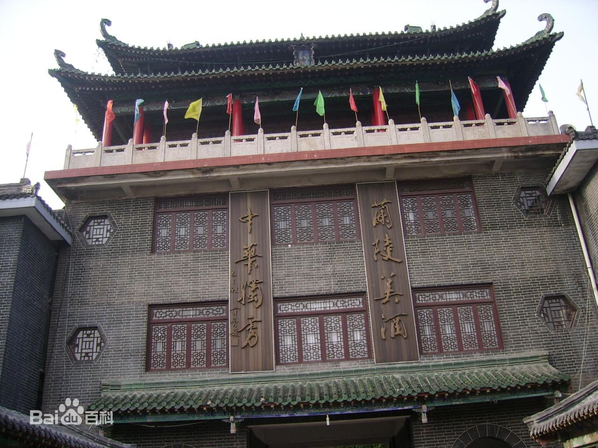
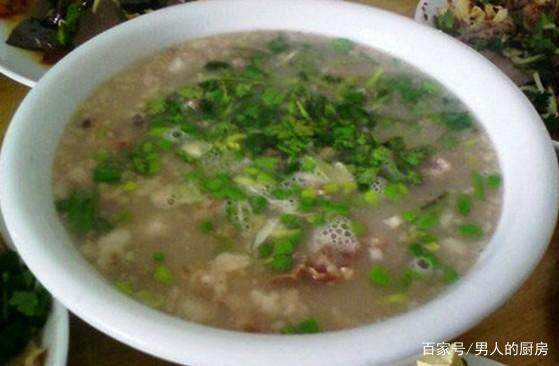

济宁市位于山东省西南部，东邻临沂地区，西与菏泽接壤，南面是枣庄市和江苏省徐州市，北面与泰安市交界。济宁是淮海经济区中心城市之一、是历史文化名城、滨水生态旅游城市。济宁属暖温带季风气候，面积1.1万平方公里，2016年人口835.44万人。
济宁地区历史文化悠久，是东夷文化、华夏文明、儒家文化、水浒文化、运河文化的重要发祥地之一。儒家创始人至圣孔子、亚圣孟子、复圣颜回、史家左丘明皆出生于此。元明清时期，京杭大运河促进了济宁商品经济的繁荣，使济宁成为京杭大运河沿岸重要的工商业城市。

《七绝•登济宁太白楼》
任城酉月正金秋，
我御唐风上古楼。
早取吴刚千瓮酒，
来寻供奉醉歌喉！
没错！这就是描写济宁著名景点--太白楼：
太白楼在中国一共有四处，分别是济宁太白楼、马鞍山太白楼、歙县太白楼、四川省江油市青莲镇太白楼。四处各具风格，济宁太白楼肃穆沉静，马鞍山太白楼庄严辉煌，歙县太白楼古朴素雅。其中李白在济宁生活二十余年，日日在太白楼上饮酒赋诗，李白在此得到玄宗皇帝的征召，受到玄宗皇帝的赐还后又归于此。所以济宁太白楼与李白最为密切。 太白楼作为中国历史文化名楼之一，其自身悠久的历史始终见证着诗仙李白文化在济宁的传承，是一代代济宁人心目中的文化地标。
想必大家都知道孔子故里-曲阜，而对于济宁却了解甚少，其实曲阜是属于济宁的一个县级市。现在要介绍的就是济宁另一个旅游胜地：三孔（孔府、孔庙、孔林）。山东曲阜的孔府、孔庙、孔林，统称曲阜“三孔”，是中国历代纪念孔子，推崇儒学的表征，以丰厚的文化积淀、悠久历史、宏大规模、丰富文物珍藏，以及科学艺术价值而著称。
山东曲阜是孔子的故乡。孔夫子生前在此开坛授学，首创儒家文化，为此后2000多年的中国历史深深地打上了儒学烙印。以孔子为代表的儒家文化，按照自己的理想塑造了整个中国的思想、政治和社会体系，成为整个中国文化的基石。1994年孔庙、孔林、孔府被联合国列入《世界遗产名录》。
孔庙：公元前478年始建，后不断扩建，至今成为一处占地14公顷（1公顷=10000平方米）的古建筑群，包括三殿、一阁、一坛、三祠、两庑、两堂、两斋、十七亭与五十四门坊，气势宏伟、巨碑林立，堪称宫殿之城。
孔府：建于宋代，是孔子嫡系子孙居住之地，西与孔庙毗邻，占地约16公顷，共有九进院落，有厅、堂、楼、轩463间，旧称“衍圣公府”。
孔林：亦称“至圣林”，是孔子及其家族的专用墓地，也是世界上延续时间最长的家族墓地，林墙周长7千米，内有古树2万多株，是一处古老的人造园林。
济宁糁汤，又名"肉粥"，是山东省的一种汉族传统名吃，流行于鲁西南一带，尤以济宁为最。糁汤现为当地百姓的日常 美味早餐，她历史悠久。甜味的糁,香甜可口，伴随着一点淡淡的中药味，香甜爽滑，细细品味，的香甜中有一点点中药的甘苦，又有稍辣的感觉，食后舌下生津，回味甘甜。
带子上朝是一道特色传统名菜，属于鲁菜菜系中很有特色的菜式。色泽深红，肉质鲜香，汁浓味厚，酥烂可口。以花生 为主要材料。我敢说这个你肯定没有听说过。
蜜制红三刀是山东济宁金乡特色传统风味名点，制作历史悠久，起源于19世纪中期。 红三刀以大槽芝麻油、麦芽、小米糖稀、白糖、蜂蜜、芝麻、桂花为原料。先将蒸熟的面粉，按一定比例兑入糖稀合成面块，然后取剂成胚，经油炸、浸浆而成。红三刀呈漫方形，迎面三刀，表分四瓣，面蒙脱皮芝麻，灿若繁星点缀;中间红而透亮，底似薄冰，闪闪发光。食之外酥内松，香味纯正，沙甜可口，食而不腻，广受欢迎。
（点击）------------欢迎来济宁玩--------------------------------